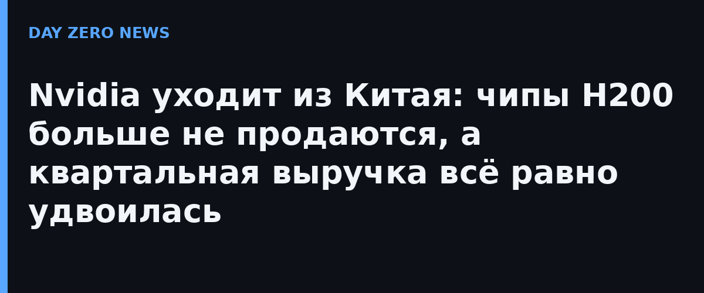

Исполняющая обязанности CEO Nvidia Колетт Кресс во вторник объявила: компания больше не продаёт чипы H200 в Китай. Так Nvidia официально вышла из спорной «лазейки» в американских экспортных ограничениях — договорённости, которую лично выбивали Дженсен Хуанг и президент Трамп: чипы шли через территорию США, и американская казна забирала с каждой поставки 25% пошлины. Официального пресс-релиза именно про остановку продаж нет — факт озвучен на звонке с инвесторами, это самое авторитетное публичное заявление компании.
Примечательна реакция Китая: по данным Georgetown CSET, Поднебесная и раньше не горела желанием принимать H200 — Пекин сознательно давит в пользу собственных чипов, даже когда местные ИИ-лаборатории просят «железо» получше.
Пока вокруг компании политический шторм (Хуанга убрали с поста CEO на прошлой неделе, против него ведутся разбирательства, а сотрудники предупреждают об «незаменимом» оттоке талантов), отчёт за третий квартал фискального 2027 года (квартал закончился 25 октября) тащит совсем другая история. Выручка — $115,8 млрд, плюс 20% квартал к кварталу и плюс 103% год к году. Выручка дата-центров — $107,6 млрд, плюс 110% за год. Чистая прибыль — $65,3 млрд, разводнённая EPS по GAAP — $2,70. Платформа Vera Rubin NVL72 уже пошла в поставку, а «взрывной старт» нового флагмана Кресс назвала главным ответом на вопросы о будущем без Хуанга.
За день до звонка вступили в силу новые правила США: продвинутые чипы запрещены зарубежным дата-центрам, которые удалённо обслуживают китайских клиентов. Инвестбанк Jefferies оценил риск в $44–62 млрд выручки дата-центров за следующий год. Кресс парировала: бэклог заказов на Vera Rubin настолько велик, что правила не ударят по верхней строке отчёта. Крупные ЦОД, впрочем, теперь обязаны сертифицировать, что не обслуживают китайских заказчиков.
Тем же днём совет директоров объявил о создании постоянного Комитета по надзору за нацбезопасностью и экспортным контролем — глава Сьюзан Нора Джонсон, заседать не реже раза в квартал, с привлечением внешних юристов и экспертов по торговле. Председатель совета Харви Джонс пообещал «вести отрасль» в защите нацбезопасности. Командам нацбезопасности и глобального торгового соответствия теперь подчиняться комитету напрямую. Первый после Хуанга сигнал рынку: Nvidia перестаёт быть семейной фирмой одного харизматика и превращается в компанию с комплаенсом уровня оборонного подрядчика.